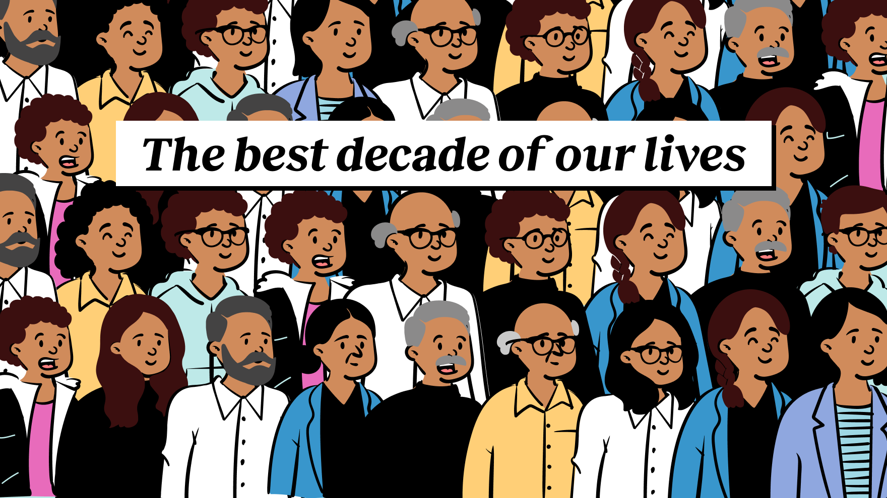

Graphic by Anuj Debnath, 12 Oct '26
Source: First Principles reader survey

We asked 301 readers which decade of their life has been the happiest, when they first felt middle-aged, and at what age they would stop ageing if they could
This is a special edition of First Principles. In September, we asked you about getting older: at what age you would stop the clock if you could, which decade of your life has been the happiest, and when you first felt middle-aged. 301 of you answered.
Here’s everything we have for you in First Principles this week:
[The best way to experience this edition is to read it on our website or app. The charts move as you scroll, and you can hover over or tap them to see each reader’s answers. Most email clients won’t show them.]
We started with the biggest question of all: what if you could stop getting older?
How far back readers would go
Median age at which readers in each decade would take the pill. Illustrations, not portraits of real readers.
But how have the years been so far?
Then we asked about the years you’ve already lived.
Next, what made that happiest decade what it was.
Then, at some point, something changes.
Middle age doesn’t start on a fixed date. It’s more a feeling, and for many of you it arrived suddenly.
What gave it away? For almost half of you, it was your own body.
Some of the moments you described. We quote only readers who agreed to be quoted, and identify them by decade and city.
So what comes next?
Finally, we asked you to look ahead.
The best is still ahead, until it isn’t
Share of readers in each decade who say their happiest decade is still ahead of them. Illustrations, not portraits of real readers.
Put together, the answers show a pattern. Most of you think your happiest decade so far is a recent one, and most expect the happiest one to come later still. And middle age doesn’t come with a particular birthday. It comes when your knees, your children or your younger colleagues start to remind you of your age.
Want the full version? The quiz asks all nine questions readers answered and builds your age profile as you go.
301 readers of First Principles answered the survey between 13 and 22 September 2026. It is not a representative sample. 72% of respondents are men, and most live in Bengaluru, Mumbai or Delhi NCR.
Percentages leave out readers who skipped a question or said it was too close to call. If a reader said they expected their happiest decade to be “the one I'm in now”, we counted it as the decade they are in. Themes in the middle-age answers were assigned by keyword matching, so a single answer can count towards more than one theme. We quote only readers who agreed to be quoted, and identify them only by decade and city. The characters are illustrations, not portraits of real readers.